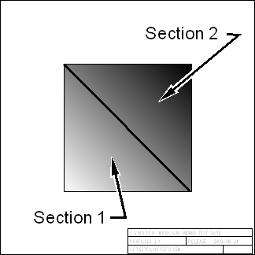

| Source image | Reference image before style changes |
|---|---|
 |
| Test | Purpose | Test Result | Comments |
| Set APS Fill Offset | NA | Passed if section 1 is white and section 2 shows an interpolated interior from white to gray, | |
| Get APS Fill Offset | NA | Passed if test result is 50 50. |